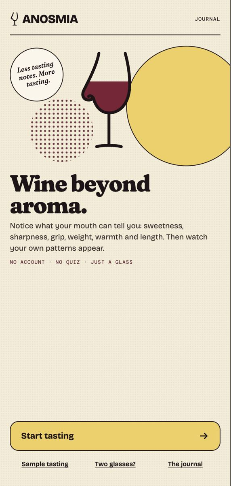
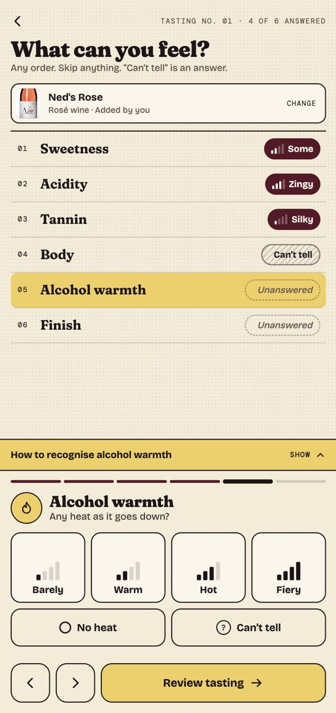
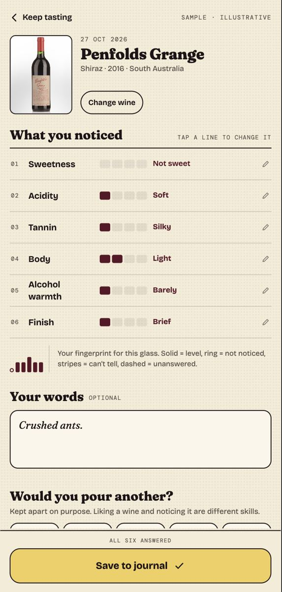

“Crushed ants.”
That's what I said when someone asked me what I could taste in a glass of Grange Hermitage.
For my 21st birthday my father gave me 21 bottles of Penfolds Grange Hermitage. Of course I did the only sensible thing and sold them to buy art supplies.
An old nose injury left me with very little sense of smell (long story). The elaborate vocabulary of wine tasting—blackcurrants, leather, tobacco, forest floor—sounds like The Emperor's New Clothes when you can't reliably smell any of it.
But I can still experience sweetness, acidity, body, alcohol warmth, finish and... the other one. I wanted to learn to recognise those sensations more reliably, so I built Anosmia.
Records you can't quietly rewrite
Retasting creates a new record. You can correct a wine's identity or photograph, but never its original sensory responses, tasting note, enjoyment rating or date. The point is to see whether perception changes over time—not to retrospectively improve your answers.
Start with what you can feel
Most wine-tasting tools ask what you recognise. Anosmia starts with what you can actually perceive: sweetness, acidity, tannin, body, alcohol warmth and finish—six sensory dimensions, each with contextual guidance and a simple way to respond.
“Not noticed” and “Can't tell” are valid answers. There's no need to invent a convincing tasting note.
A glass in one hand, a phone in the other
I designed the recording flow for one-handed use. Controls stay anchored at the bottom of the screen, with the sensation overview and learning guidance in the space above. You can identify the wine and attach a photograph, but neither is required to record a tasting.
The Cellar Book
Each completed tasting becomes a permanent observation, stored locally and available offline.
Two glasses
A guided A/B comparison asks which wine feels more acidic, fuller or warmer—or whether you can tell the difference at all. Blind comparisons keep identities hidden until the appropriate point.
Design, build, test
I designed the identity, interaction flows and component system in Figma, then built Anosmia as an installable React and TypeScript PWA. It uses IndexedDB for local-first storage, supports camera capture and works offline. The interface has been tested across browsers and on a physical Android phone.
AI-assisted tools were part of the design and development process, alongside hands-on product decisions, debugging, test review and device verification.
I still can't reliably taste blackcurrants. But I want to find out what I can learn to recognise.
Walkthrough
Tech
React, TypeScript, Vite,
IndexedDB, PWA, Figma,
UX / interaction design


